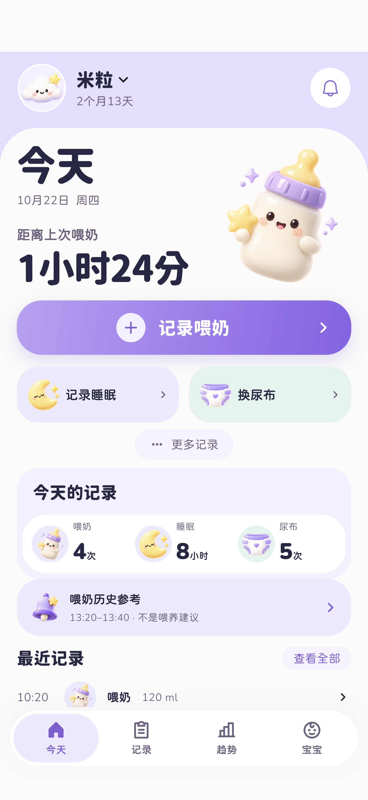
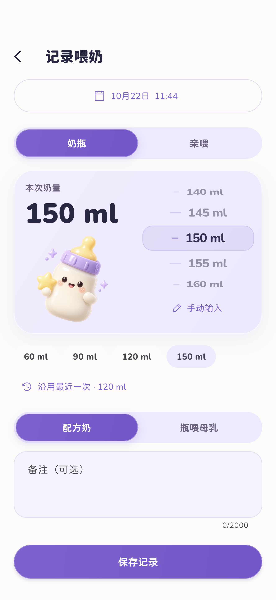
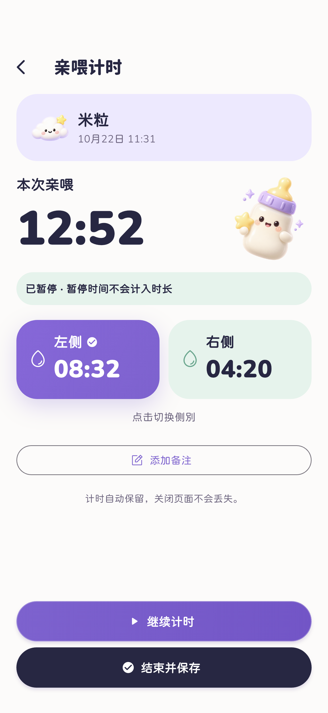
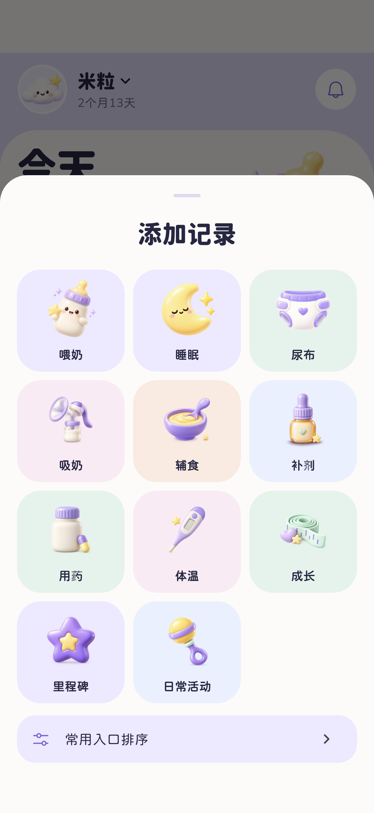
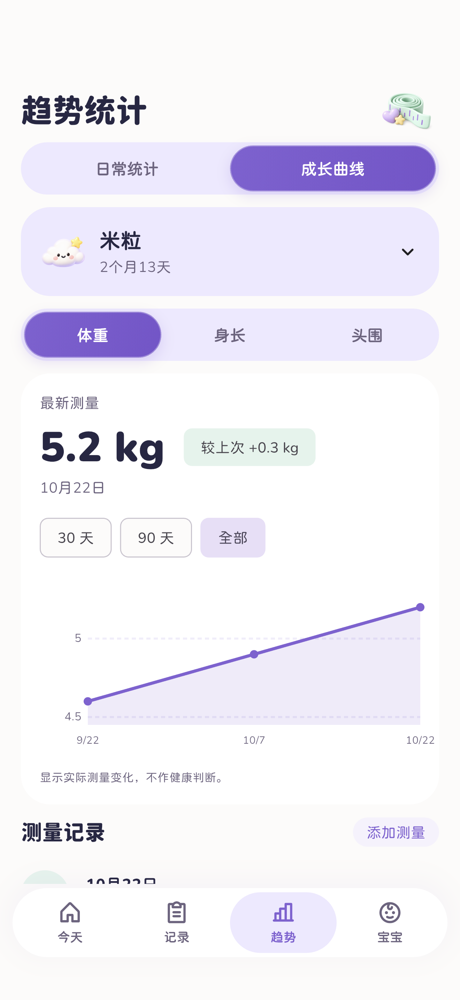
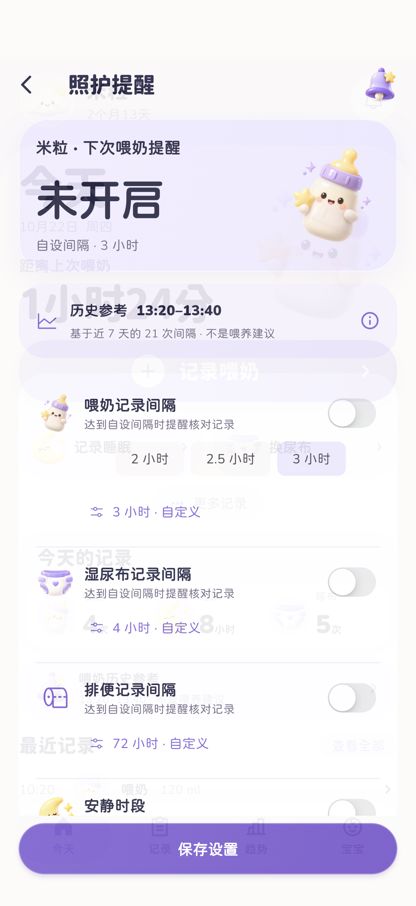
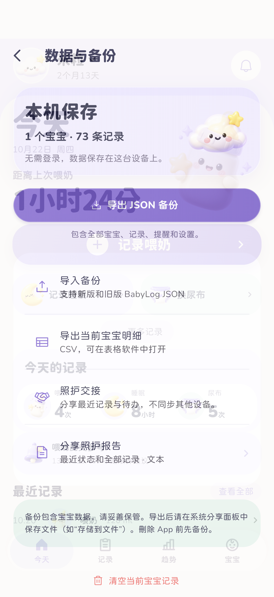

DAILY CARE
少点操作，多点清楚。
01
奶量快选，亲喂计时
滚动刻度、常用奶量和精确输入；左右分侧计时，可随时暂停。
02
日常照护，完整记录
喂奶、睡眠、尿布、辅食、补剂与成长测量，时间线与趋势放在一起看。
03
本机保存，主动备份
支持多个宝宝，JSON 备份与恢复、CSV 明细和文字交接。不是云同步，也不需要账号。
REAL APP, REAL SCREENS
可爱，也要顺手。







以上为实际 App 界面，使用虚构示例数据。界面语言可切换为中文或 English。
LOCAL FIRST
不用注册， 先把记录做好。
有问题？我们来帮你。
查看备份、提醒和记录使用说明，或直接联系支持。